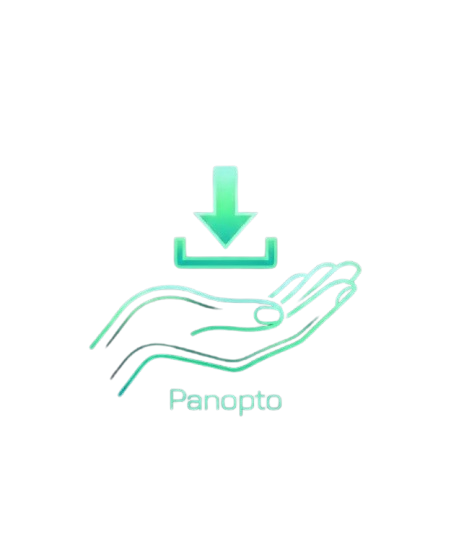

Scanning page for streams...
Inspecting Panopto metadata, camera feeds & screen shares.
Not a Panopto Page
Navigate to a Panopto lecture recording (panopto.com or panopto.eu) to download multi-screen streams.
Embedded Player Detected
Switch to the full Panopto Viewer to extract all multi-screen streams in high resolution.
No Video Streams Found
Could not extract video URLs from this page. Try starting video playback first so the player requests the streams, then reopen this popup.